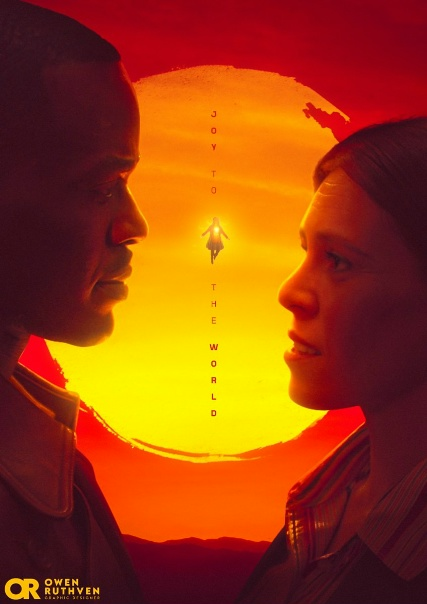
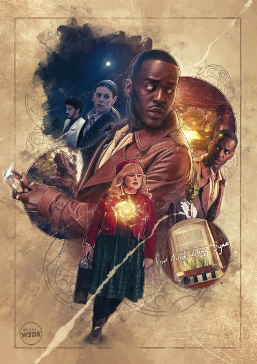
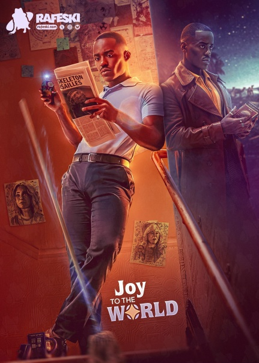

Эра Пятнадцатого Доктора
<<< НАЗАД ||| Радость миру ||| ДАЛЬШЕ >>>
или
<<< НАЗАД к мини-эпизоду
MVO [TVShows] 2.0 + 5.1, DUB [IRONVOICE], MVO [GoLTFilm], MVO [LE-Production], MVO [ColdFilm], MVO [RUDUB], DVO [KerobTV] или Original [ENG]
Субтитры: Русские, форсированные
или Русские {TrueTransLate} - на английской дорожке

Joy to the World
рождественский спецвыпуск
25 декабря 2024
Формат: 55-минутный эпизод
| Варианты озвучек: | * Разные: смотрите по инструкции чаще всего это 0-я серия второго сезона |
|---|---|
| Скачивание и просмотр: |
Джой заселяется в лондонский отель в 2024 году, где открывает потайную дверь в Отель времени, обнаружив за ней опасность, динозавров и Доктора. А пока, как раз к Рождеству, на всей Земле разворачивается смертоносный план






